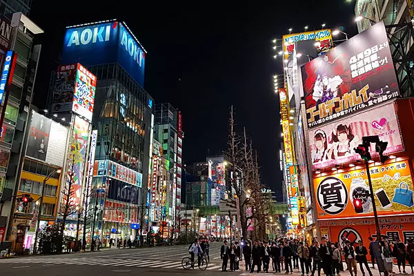

Principais Atrações
- Palácio Imperial
- Shibuya
- Akihabara
Roteiro de um dia
Em um único dia em Tóquio, comece pela manhã no histórico templo Senso-ji em Asakusa, siga à tarde para a modernidade de Harajuku e a rua Takeshita, passe pelo cruzamento gigante de Shibuya e termine a noite com as luzes de Shinjuku.